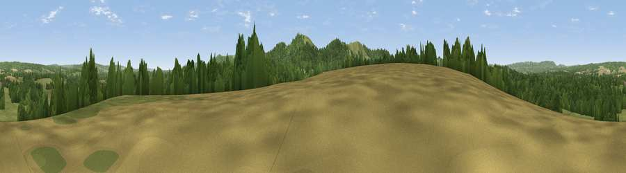

Viewpoint near Nyewood
#32809 in England · top 59% of its area beats it · near NyewoodThe view, rendered

A 360° render of this exact spot computed from the terrain model, tree cover and land cover — summer colours, afternoon light, calibrated against photographs of famous viewpoints. Real trees, hedges and buildings will differ in detail.
The panorama
Grey silhouette: terrain skyline in each direction (720 bearings, Earth curvature and refraction included). Dashed green: skyline with trees (+15 m) and buildings (+8 m) as obstacles. Blue strip: how far the ground is visible on each bearing.
Where the view opens
Wedge length = distance to the farthest visible ground on that bearing (vegetation-aware). Rings at 10, 25 and 50 km.
What fills the view
46% woodland · 39% grassland · 14% cropland
Angular shares of the visible panorama (visual magnitude), not map area. Landscape diversity 0.45 (0–1 Shannon).
Key numbers
More beautiful places nearby
The staircase of upgrades: each row has a higher view potential than everything closer. Driving times are estimates from straight-line distance, calibrated against real road routing — check an actual route before setting out.
| Place | Direction | Drive | Score |
|---|---|---|---|
| Viewpoint near Elsted | ESE · 1 km | ~3 min | 42.1 |
| Beacon Hill | S · 2 km | ~6 min | 85.8 |
| Chanctonbury Ring | ESE · 34 km | ~53 min | 87.0 |
| Viewpoint near St. Lawrence | SSW · 50 km | ~72 min | 88.2 |
| Viewpoint near Niton | SW · 54 km | ~76 min | 89.2 |
| Viewpoint near West Bexington | WSW · 130 km | ~154 min | 89.5 |
| The Knoll | WSW · 131 km | ~155 min | 91.0 |
50.97852, -0.85506 · source: screening · position refined by local search. Computed location — check access rights before visiting.